Microsoft Azure アカウント作成方法
目次
Microsoft アカウントを作成
- 以下のサイトにアクセスする。
https://signup.live.com/
- メールアドレスを入力して Next ボタン押下。
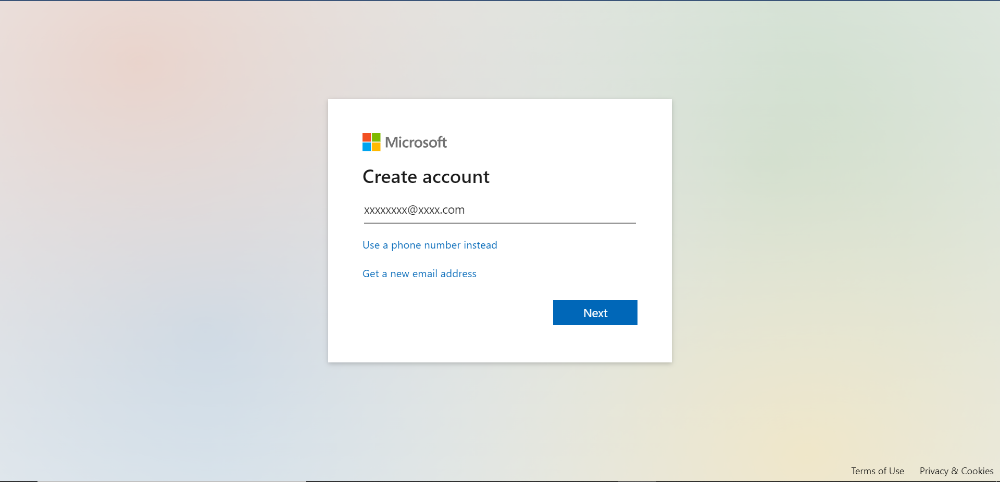
- 任意のパスワードを入力して Next ボタン押下。
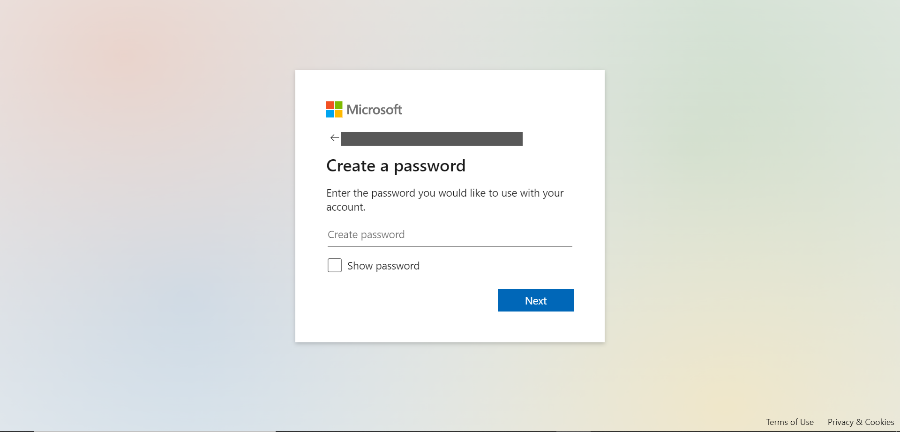
- アカウント名を入力して Next ボタン押下。
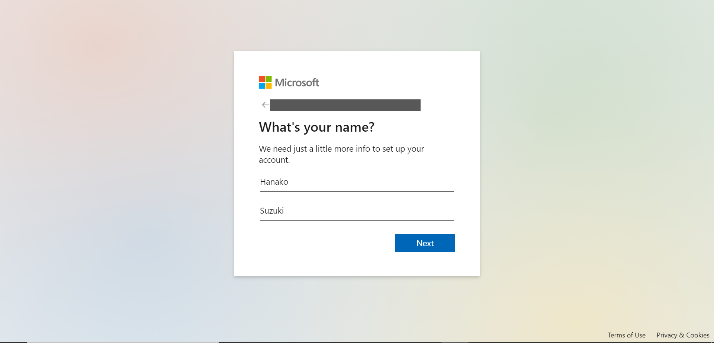
- 国と生年月日を選択して Next ボタン押下。
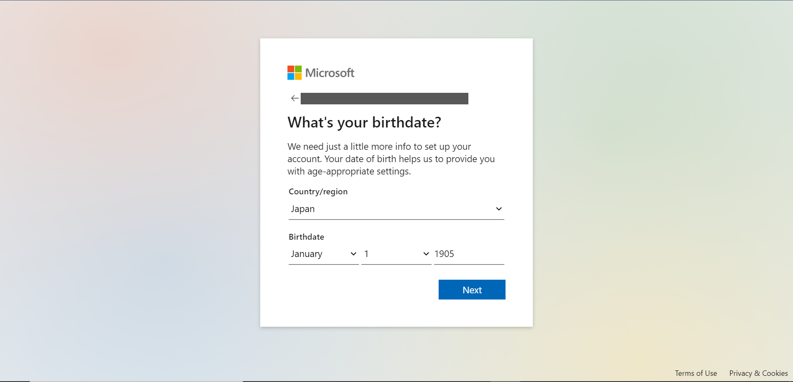
-
登録したメールアドレスに Microsoft account team からメールが届いているはずなので、そこに記載されているセキュリティコードを入力し、Next ボタン押下。
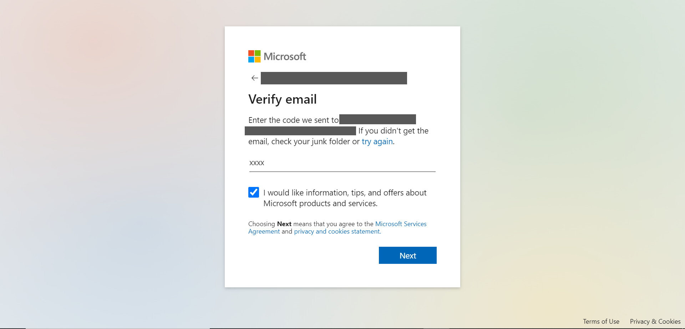 Microsoft 製品やサービス等の情報のメールを受信希望する場合はチェックボックスにチェックを入れましょう。
Next ボタン押下と同時に Microsoft サービス規約、プライバシーとCookie に関する声明に同意することとなります。
-
あなたがロボットではなく、素敵な人間であることを証明。
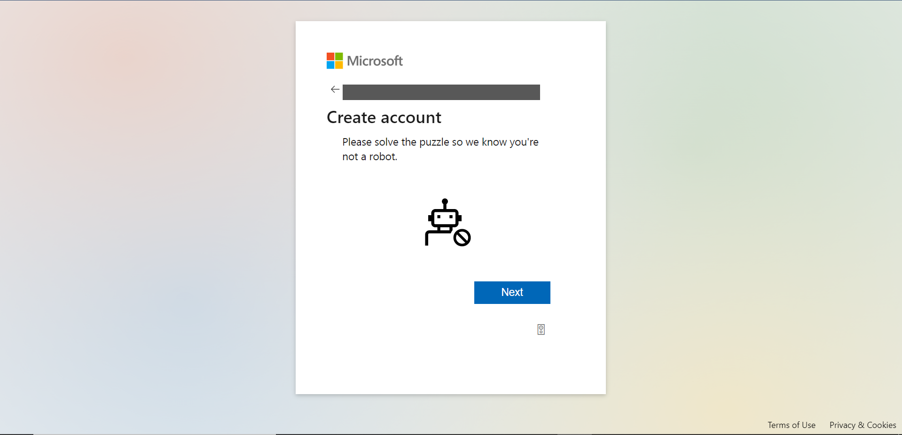 出される問題を解けば OK です。
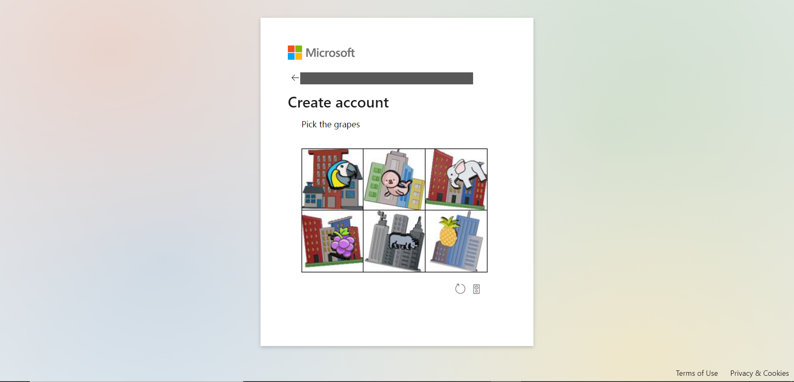
-
アカウントにサインインしたままにするかしないか、好きなほうを選択。
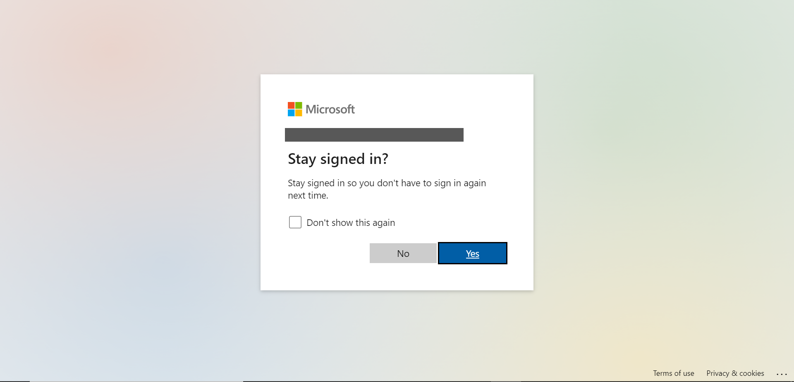 私はチェックボックスにチェックを入れて、Yes を選択しました。
- Microsoft アカウント作成完了！

Azure サブスクリプションを作成
-
以下のサイトにアクセスする。
https://azure.microsoft.com/en-us/free/
-
Start free ボタン押下。
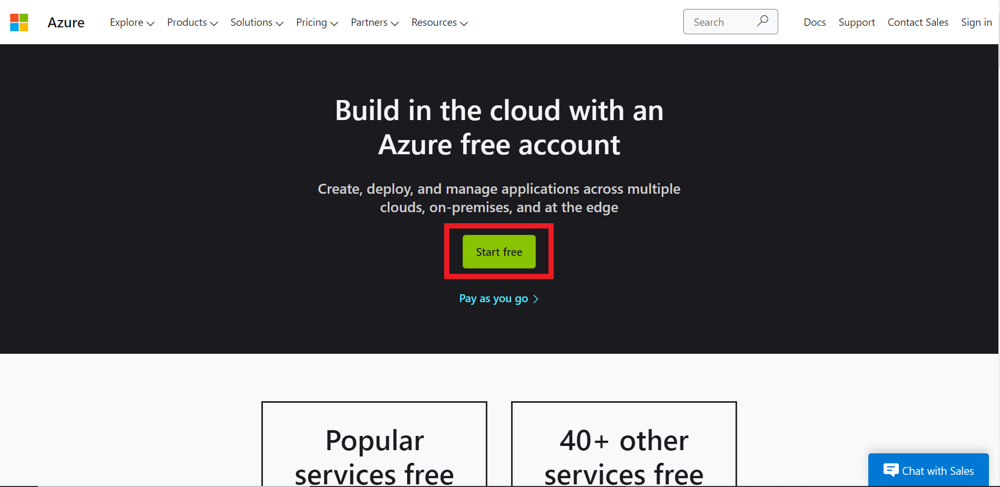
- Microsoft アカウント作成時に使用したメールアドレスを入力して Next ボタン押下。
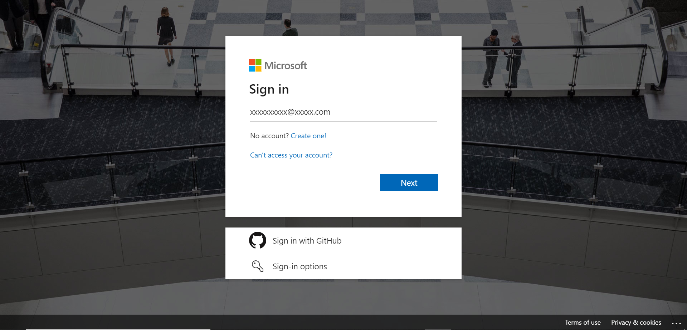
-
Phone の欄に電話番号を入力する。
（Country/Region, First name, Last name, Email address については Microsoft アカウントに登録した内容で自動入力されているはず。）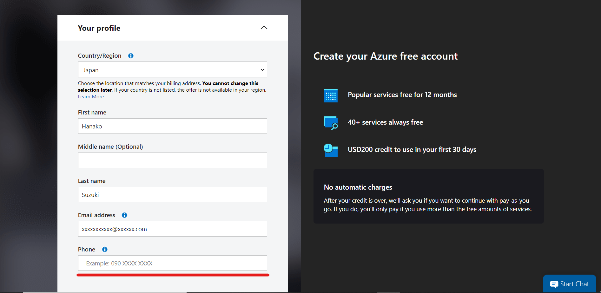 ⚠このページはウィンドウサイズを変えると入力内容が消えてしまうので、以降の作業は気を付けてください。
Text meボタン orCall meボタン押下で Verification code を受け取り、コード欄に入力、Verify code ボタン押下。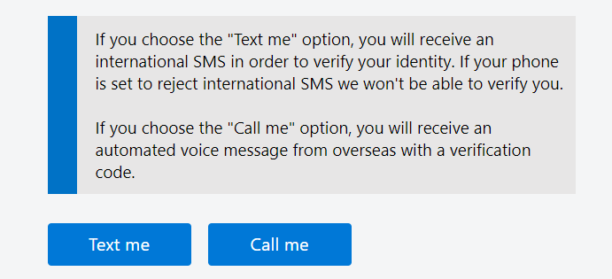
- 名前の読みを入力する。
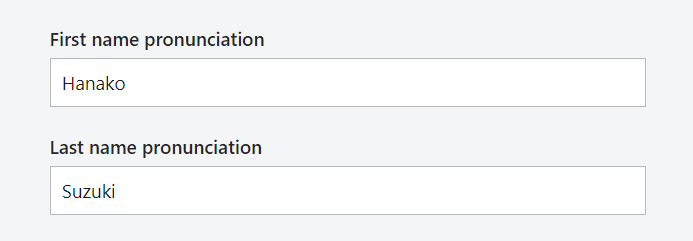
-
住所を入力する。
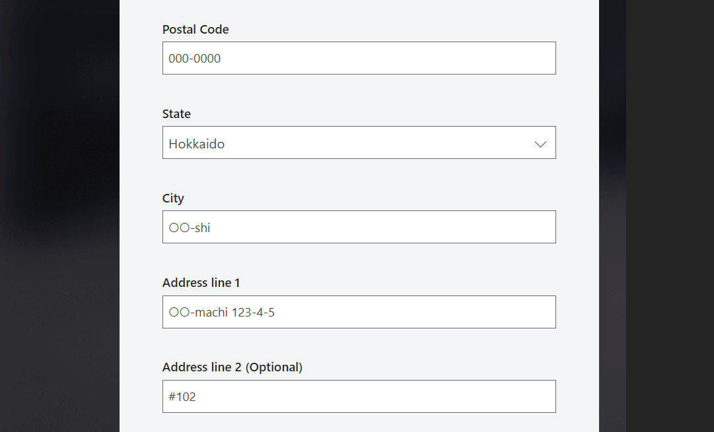 - Postal Code: 郵便番号
- State: 都道府県
- City: 市区町村
- Address line: 以降の住所
- チェックボックス
I agree to the customer agreement and privacy agreement.にチェックを入れて、Next ボタン押下。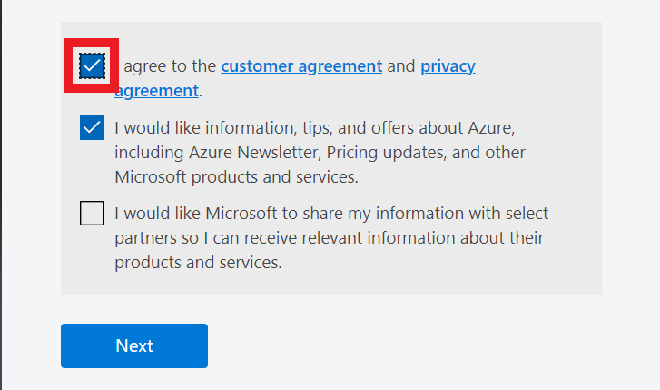
- 支払いに使用するクレジットカードの情報を入力し、最下部のSign up ボタン押下。
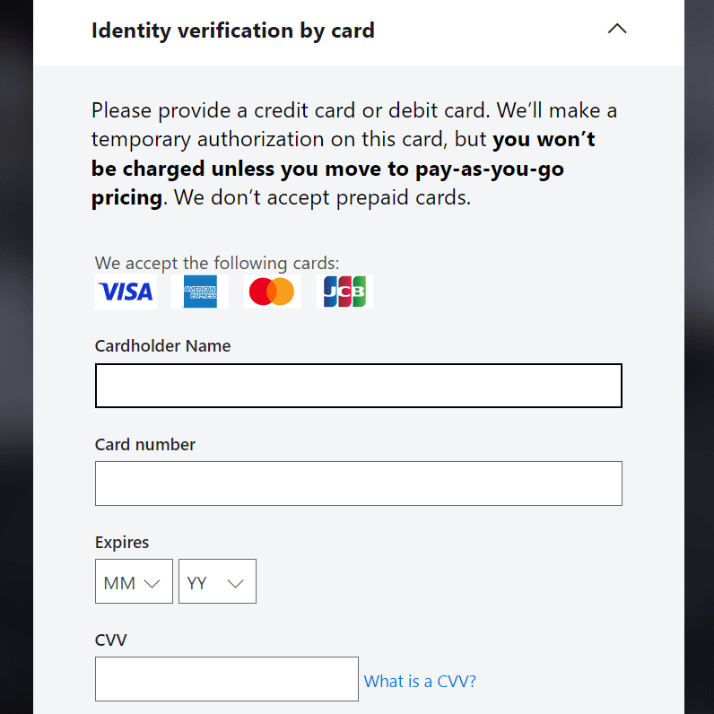
- 画面遷移するので、Go to the Azure portal ボタン押下。
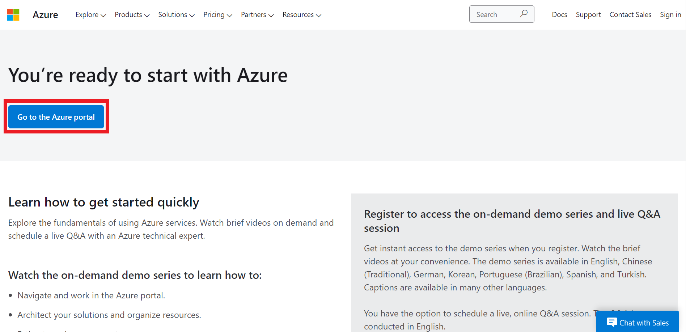 この画面に移る前にConfirming your information...という画面が表示されるのですが、特に何もしなくてもしばらくすれば画面が切り替わるようです。
- 登録完了！

なんだか色々なことができそうで、使うのが楽しみです！わくわく！
こちらのブログは初心者エンジニアが勉強の記録やアウトプットの一環として執筆しております。
内容に誤りがある可能性が多大にありますのでご了承ください。